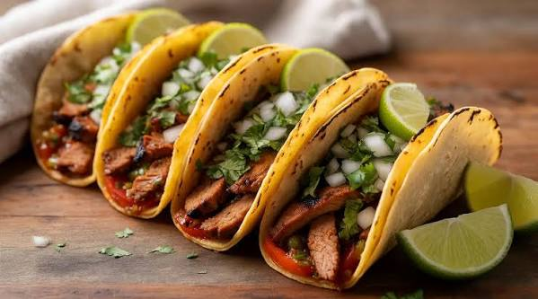

Preparar tacos de carne en casa con el estilo tradicional mexicano es una experiencia súper divertida.
La clave está en lograr una carne jugosa y muy bien condimentada, acompañada de salsas frescas que corten la grasa.
Tortillas: 12 tortillas pequeñas de maíz o de trigo
La Carne: 500 g de carne de vaca picada (o cortada a cuchillo en cubitos muy chiquitos).
Vegetales base: 1 cebolla mediana y 2 dientes de ajo.